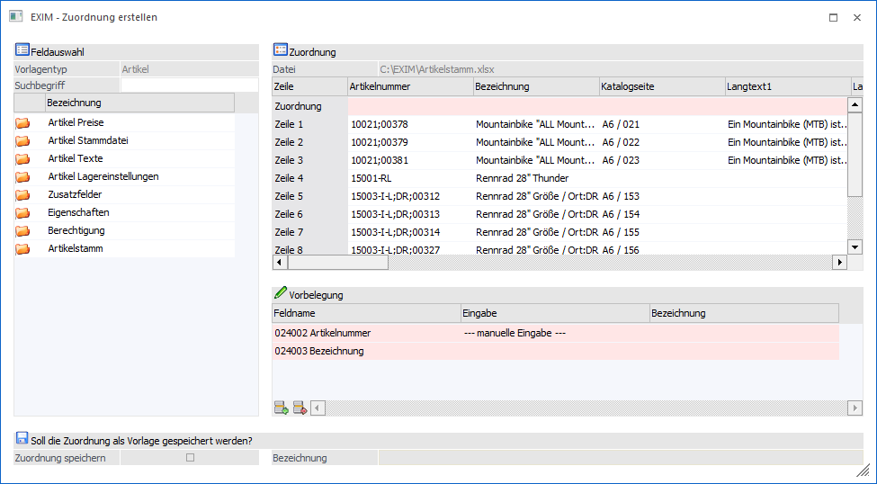
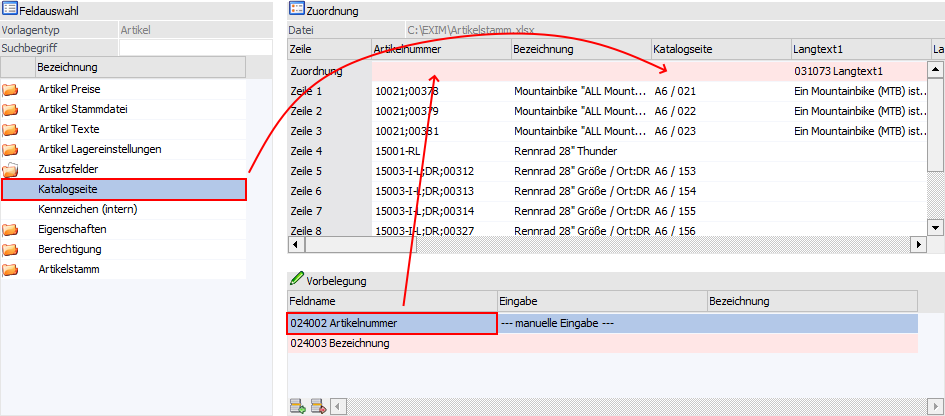
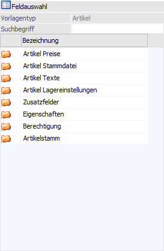
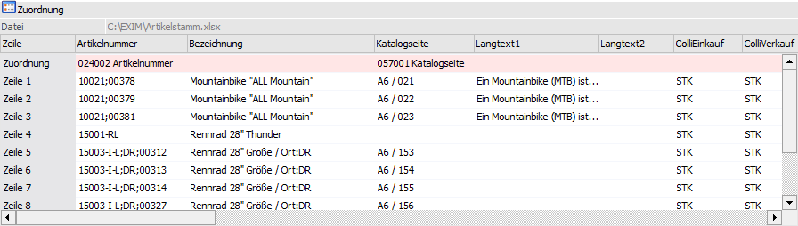
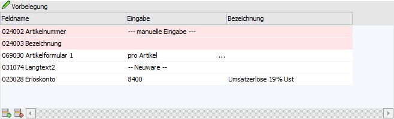
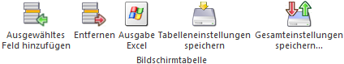
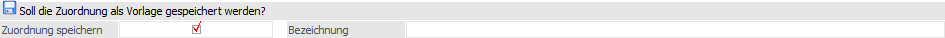
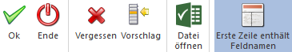

Das Fenster "EXIM - Zuordnung erstellen" ermöglicht die Anlage der EXIM-Vorlage unter Zuhilfenahme der Importdatei und wird automatisch bei Anwahl des Buttons "Ok" bzw. der Taste F5 geöffnet. Hierfür müssen nur folgende Einstellung im Fenster Export/Import getätigt werden:
ü Vorbelegungsvariante = "manuell (Vorbelegung)"
ü Export / Import = "Import"
ü Treibertyp / Treiber = "Excel"
ü Vorlage = "N - neue Vorlage erstellen"
Hinweis
Alle weiteren Hinterlegungen sind wie gewünscht vorzunehmen. Der Datensatzaufbau der Importquelle spielt zudem kaum eine Rolle. Es muss lediglich gewährleistet sein, dass sich der Key des Stammdatensatzes in der ersten Spalte befindet.

Ziel ist es die Spalten der Tabelle "Zuordnung" mit Datenfeldern der WinLine zu verbinden. Hierfür stehen die Bereiche "Feldauswahl" und "Vorbelegungen" zur Verfügung, aus denen passende Felder per Drag & Drop der Importdatei zugeordnet werden können.
Beispiel

Tabelle "Feldauswahl"

Ø Vorlagentyp
Hier wird der im EXIM-Fenster selektiert Vorlagentyp angezeigt.
Ø Suchbegriff
An dieser Stelle kann durch die Eingabe und Bestätigung eines Suchbegriffs in den zur Verfügung gestellten Datenbereichen nach passenden Einträgen gesucht werden. Durch das Entfernen und Bestätigen des (leeren) Suchbegriffs werden wieder alle Einträge in der Datentabelle angezeigt.
Hinweise
Es handelt sich hierbei um eine Volltextsuche, d.h. durch die Eingabe von "leit" würde das Feld "Postleitzahl" gefunden werden. Zusätzlich sind folgende Punkte bei der Zuordnung zu beachten:
ü Jedes Datenfeld kann per Drag & Drop in eine Spalte der Tabelle "Zuordnung" (für eine 1 zu 1-Verbindung) geschoben werden. Soll während des Imports ein Feld der WinLine mit einem immer gleichlautenden Inhalt bzw. Werte gefüllt werden, so ist das Feld in die Tabelle "Vorbelegung" zu übernehmen.
ü Sobald ein Feld in die Tabelle "Zuordnung" verschoben wurde, wird es aus dieser Tabelle entfernt und kann kein weiteres Mal zugeordnet werden (ein Verschieben innerhalb der Zuordnungs-Tabelle ist aber möglich).
ü Sobald ein Feld in die Tabelle "Vorbelegung" verschoben wurde, verbleibt es dennoch in der Feldauswahl-Tabelle.
Tabelle "Zuordnung"

Diese Tabelle zeigt die Inhalte der Datenquelle. Es erfolgt die Zuordnung der Felder aus der Feldauswahl-Tabelle und der Vorbelegungstabelle in die Zeile "Zuordnung". So kann definiert werden, welche Werte aus der Importquelle in die WinLine "wohin" importiert werden sollen. Zur besseren Orientierung werden hierfür die ersten 10 Zeilen aus der Importquelle abgebildet.
Ø Datei
Oberhalb der Tabelle wird der Name der verwendeten Datei ausgegraut angezeigt.
Ø Spaltenbeschriftung
Wenn laut der Einstellung im EXIM-Fenster (sprechende Spaltenbezeichnung) eine Kopfzeile in der Datei vorhanden ist, so wird diese eingelesen und für die Bezeichnung der Spalten verwendet, andernfalls werden die Spalten hier durchnummeriert.
Ø Zeile "Zuordnung"
Die erste Zeile in der Tabelle ist rosa eingefärbt und bleibt zu Beginn der Zuordnung zunächst frei. Genau hier werden die Zuordnungen der passenden Felder durchgeführt.
Hinweise
Folgende Punkte sind bei der Zuordnung zu beachten:
ü Felder können aus den anderen beiden Tabellen per Drag and Drop in diese Tabelle auf die passende Spalte der Zeile "Zuordnung" gezogen werden.
ü Ein Feld, welches in der Feldauswahl-Tabelle im Fokus steht, kann innerhalb dieser Tabelle via Doppelklick in die entsprechende Spalte der Zuordnungs-Zeile gelangen. Das Entfernen von Felder aus der Zuordnungs-Zeile (in die Feldauswahl-Tabelle) ist ebenso via Doppelklick möglich.
ü Innerhalb der Tabelle können Felder von Spalte zu Spalte ebenso per Drag & Drop verschoben werden.
Tabelle "Vorbelegung"

In dieser Tabelle werden zu Beginn alle Datenfelder angezeigt, die zwingend zugeordnet werden müssen (die sogenannten "Pflichtfelder"- rosa unterlegt). Pflichtfelder, welche nicht zugeordnet werden, müssen innerhalb der Tabelle "Vorbelegung" über Eingaben verfügen, da die WinLine beim Import auf diese Werte angewiesen ist.
Des Weiteren können in dieser Tabelle jene Felder hinterlegt werden, welche während des Imports für alle Datensätze mit einem immer gleichlautenden Inhalt bzw. Werte gefüllt werden sollen (keine Unterlegung).
Ø Feldname
An dieser Stelle wird der Name des Datenfelde s (inklusive interner Codierung) dargestellt.
Ø Eingabe
In diesem Feld kann durch Eingabe eines Textes oder Wertes das entsprechende Datenfeld für den Import vorbelegen werden.
Ø Bezeichnung
Handelt es sich bei der Hinterlegung im Feld "Eingabe" um ein Stammdatenobjekt, so wird hier die entsprechende Bezeichnung ausgewiesen.
Hinweise
Folgende Punkte sind bei der Zuordnung zu beachten:
ü Wird ein Feld aus dieser Tabelle in die Tabelle "Zuordnung" gezogen, so wird es ebenso aus der Tabelle "Feldauswahl" entfernt.
ü Durch das Setzen des Fokus auf ein Feld innerhalb der Feldauswahl- bzw. Zuordnungstabelle kann es hier durch das Selektieren der Tabellenbuttons (entsprechend der Beschriftung) hinzugefügt oder entfernt werden.
Tabellenbuttons

Ø Ausgewähltes Feld hinzufügen
Durch Anwahl dieses Buttons wird das aktuell selektierte Feld der Tabelle "Feldauswahl" in die Tabelle "Vorbelegung" übernommen.
Ø Entfernen
Mit Hilfe dieses Buttons wird das gewählte Feld aus der Tabelle "Vorbelegung" entfernt.
Ø Ausgabe Excel
Durch Anwahl des Buttons "Ausgabe Excel" wird der Inhalt der Tabelle an Microsoft Excel übergeben.
Ø Tabelleneinstellungen speichern
Die Spalten einer Tabelle können grundsätzlich an beliebige Positionen verschoben, bzw. in der Breite entsprechend angepasst werden. Durch Anwahl des Buttons "Tabelleneinstellungen speichern" werden die Einstellungen benutzerspezifisch gespeichert und bei dem nächsten Aufruf des Programmpunktes wieder vorgeschlagen.
Ø Gesamteinstellungen speichern
Im Gegensatz zu "Tabelleneinstellungen speichern" können mit "Gesamteinstellungen speichern" mehrere Tabellenaufbauten gespeichert und nach Wunsch geladen werden. Zusätzlich werden Sonderfunktionen der Tabelle (z.B. "Spalte gruppieren") ebenfalls bei der Speicherung bedacht.
Soll die Zuordnung als Vorlage gespeichert werden?

Ø Zuordnung speichern
Sobald der Stammdatenkey zugeordnet wurde, kann die gesamte Zuordnung unter einen eigenen Namen gespeichert werden. Hier wird zunächst die Option "Zuordnung speichern" aktiviert und anschließend eine Bezeichnung vergeben. Die endgültige Speicherung findet bei Anwahl des Buttons "Ok" statt.
Hinweis
Wird dies nicht durchgeführt, so wird für den Import lediglich eine temporäre Zuordnung / Vorlage gebildet! In solch einem Fall wird das Feld Vorlage des EXIM-Fensters mit der Hinterlegung "T - temporäre Zuordnung" versehen.
Buttons

Ø Ok
Durch Anwahl des Buttons "Ok" bzw. der Taste F5 werden folgende Schritte ausgeführt:
ü Zunächst wird der Aufbau der Zuordnung geprüft und auf etwaige Fehler (z.B. fehlende Pflichtfeldzuordnung) hingewiesen.
ü Anschließend wird die Zuordnung als neue oder temporäre Vorlage (zwischen)gespeichert.
ü Zum Abschluss wird das Fenster "EXIM - Zuordnung erstellen" geschlossen, die Vorlage an das EXIM-Fenster übergeben und abgängig von der Einstellung "Sätze vor Import editieren" bzw. "automatisch nur gültige" das Fenster Importvorschau geöffnet oder der Import direkt durchgeführt.
Ø Ende
Durch Drücken des Buttons "Ende" bzw. der Taste ESC wird das Fenster geschlossen und alle bisher getätigten Zuordnungen verworfen.
Ø Vergessen
Durch Anklicken dieses Buttons werden alle bisher getätigten Zuordnungen verworfen.
Ø Vorschlag
Bei Anwahl dieses Buttons versucht die WinLine, aufgrund der Bezeichnung (jeder Spalte der Zuordnungstabelle) das entsprechende Feld in der Feldauswahl-Tabelle zu finden und zuzuordnen.
Ø Datei öffnen
Mit Hilfe des Buttons "Datei öffnen" wird die Importdatei in Excel geöffnet.
Ø Erste Zeile enthält Feldnamen
Mit diesem Button kann definiert werden, ob es in der Datei eine Überschriftenzeile gibt oder nicht. Durch Anwahl (Einschalten) des Buttons werden die Werte aus der ersten Zeile der Importdatei in die Kopfzeile der Tabelle "Zuordnung" übernommen; beim "Ausschalten" werden die Werte hingegen aus der Kopfzeile in die erste Datenzeile übernommen (und eine allgemeine Kopfzeile angezeigt).
Hinweis
Die Anwahl des Buttons ist im Standard abhängig von der Auswahl "Spaltenbezeichnung" des EXIM-Fensters.